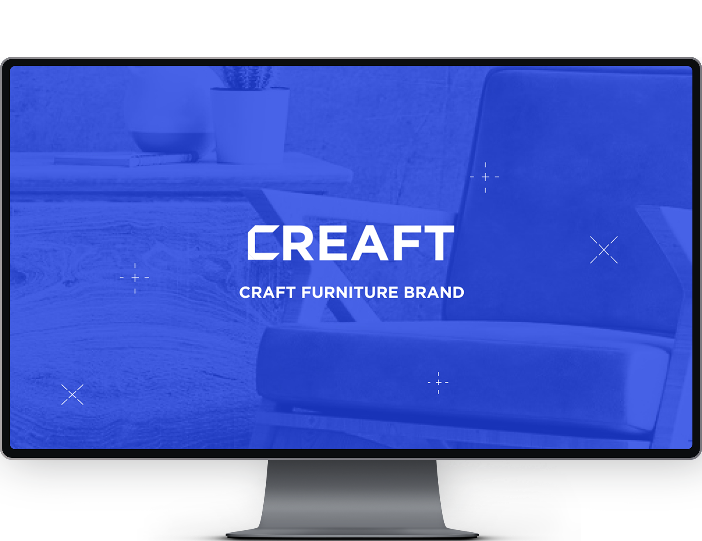
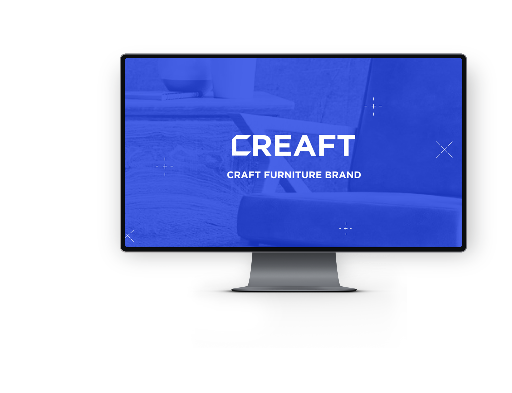

FURNITURE BRAND CREAFT
CREAFT는 늘어나는 1인 가구와 늘어나는 계약 거주에 맞춰 재활용 가구를 제공하는 친환경 브랜드로써 주 타겟층인 20대 30대에 맞춰 강렬한 색감과 활기찬 브랜드 마케팅이 특징입니다.
기여도 : 디자인 100%, 개발 100%
글꼴 : NOTOSANS

OVERVIEW
CREAFT는 제공되는 툴들로 직접 사용자가 재활용 가구를 제작할 수 있도록 만든 브랜드입니다. 그래픽 모티브 및 브랜드 이미지에 있어 커스터 마이징을 연상시키는 요소들을 활용하여 브랜드 이미지 통일성에 중점을 두어 제작하였습니다.